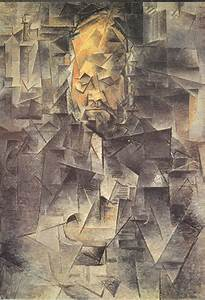
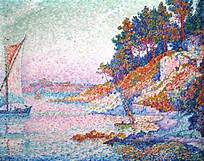
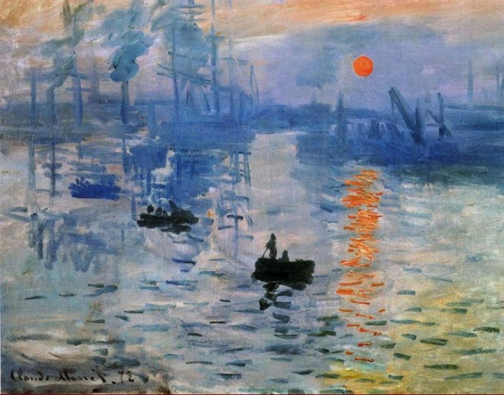

Mouvement |
Définition |
Artistes représentatif |
 Le Surréalisme |
Selon André Breton : "Automatisme psychique purpar lequel on se propose d'exprimer, soit verbalement, soit par écrit, soit de toute autre manière, le fonctionnement réel de la pensée."défintion approfondie
|
- Salvador Dali;
- Max Ernst;
- Francis Picabia.
|
|  Le Cubisme |
Le Cubisme est un courant artistique du XXème siècle, dont les sujets sont représentés avec des formes géométriques, initiés par Pablo Picasso et Georges Braque |
- Pablo Picasso et Georges Braque
- Juan Gris;
- Jean Metzinger;
- Albert Gleizes;
- Robert Delaunay.
|
|  Le Pointillisme |
Technique de peinture consistant à peindre par points de tons purs juxtaposés. Mouvement artisitique datant du XVIème siècle d'abordexposé au public par Georges Seurat. |
- Georges Seurat;
- Robert Delaunay;
-
- Robert Delaunay.
|
|  L'Impressionnisme |
L'Impressionnisme est un mouvement et une tendance artistique apparut en france dans le dernier quart du XIXème siècle. On le retrouve le plus souvent dans des
peintures de paysages s'appuyant sur les sensations visuelles et l'expression directe des effets de lumiére |
- Claude Monet;
- Paul Cézanne;
- Edouard Manet. (concidéré comme un precurseur du mouvement)
|
Le surréalisme est un mouvement artistique du xxe siècle, comprenant l’ensemble des procédés de création et d’expression (peinture, dessin, musique, cinéma, littérature...) utilisant toutes les forces psychiques (automatisme, rêve, inconscient) libérées du contrôle de la raison et en lutte contre les valeurs reçues.
{kind=link}